| Symbol |
Description |
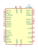
AD1853 | Description: Stereo, 24-Bit, 192 kHz, Multibit Sigma-Delta DAC, SSOP-28
Keys: audio dac 2ch 24bit 192kHz
Datasheet: https://www.analog.com/media/en/technical-documentation/data-sheets/AD1853.pdf |
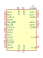
AD1855 | Description: Stereo, 96 kHz, Multibit Sigma-Delta DAC, SSOP-28
Keys: audio dac 2ch 24bit 96kHz
Datasheet: https://www.analog.com/media/en/technical-documentation/data-sheets/AD1855.pdf |
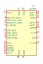
AD1955 | Description: High Performance Multibit Sigma-Delta DAC with SACD Playback, SSOP-28
Keys: audio dac 2ch 24bit 192kHz
Datasheet: https://www.analog.com/media/en/technical-documentation/data-sheets/AD1955.pdf |
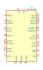
AK5392VS | Description: Enhanced Dual Bit Sigma-Delta 24Bit ADC, SOIC-28
Keys: audio adc 2ch 24bit
Datasheet: https://media.digikey.com/pdf/Data%20Sheets/AKM%20Semiconductor%20Inc.%20PDFs/AK5392.pdf |
AK5393VS | Description: Enhanced Dual Bit Sigma-Delta 96kHz 24-Bit ADC, SOIC-28
Keys: audio adc 2ch 24bit 96kHz
Datasheet: https://www.akm.com/akm/en/file/datasheet/AK5393VS.pdf |
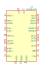
AK5394AVS | Description: Super High Performance 192kHz 24-Bit Sigma-Delta ADC, SOIC-28
Keys: audio adc 2ch 24bit 192kHz
Datasheet: http://www.akm.com/akm/en/file/datasheet/AK5394AVS.pdf |
AK5720VT | Description: Stereo, 96kHz, 24-Bit, Delta-Sigma ADC, TSSOP-16
Keys: audio adc 2ch 24bit 96kHz I2S MSB TDM
Datasheet: https://www.akm.com/akm/en/file/datasheet/AK5720VT.pdf |
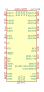
AK7742EQ | Description: 24bit 2ch ADC + 24bit 4ch DAC with Audio DSP, LQFP-48
Keys: audio adc 2ch dac 4ch dsp
Datasheet: https://www.akm.com/akm/en/file/datasheet/AK7742EQ.pdf |
AS3310 | Description: ADSR Voltage Controlled Envelope Generator, DIP-16/SOIC-16
Keys: VCEG CEM3310 ALFA
Datasheet: http://www.alfarzpp.lv/eng/sc/AS3310.pdf |
AS3320 | Description: Voltage Controlled Filter (VCF), DIP-18
Keys: VCF CEM3320 ALFA
Datasheet: http://www.alfarzpp.lv/eng/sc/AS3320.pdf |
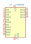
AS3320F | Description: Voltage Controlled Filter (VCF), QFN-24
Keys: VCF CEM3320 ALFA
Datasheet: http://www.alfarzpp.lv/eng/sc/AS3320.pdf |
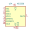
AS3330 | Description: Dual Voltage Controlled Amplifier (VCA), DIP-18
Keys: VCA CEM3330 ALFA
Datasheet: http://www.alfarzpp.lv/eng/sc/AS3330.pdf |
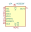
AS3330F | Description: Dual Voltage Controlled Amplifier (VCA), QFN-24
Keys: VCA CEM3330 ALFA
Datasheet: http://www.alfarzpp.lv/eng/sc/AS3330.pdf |
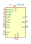
AS3340 | Description: Voltage Controlled Oscillator (VCO), DIP-16/SOIC-16
Keys: VCO CEM340 ALFA
Datasheet: http://www.alfarzpp.lv/eng/sc/AS3340.pdf |
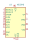
AS3345 | Description: Voltage Controlled Oscillator (VCO), DIP-18
Keys: VCO CEM345 ALFA
Datasheet: http://www.alfarzpp.lv/eng/sc/AS3340.pdf |
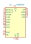
AS3345F | Description: Voltage Controlled Oscillator (VCO), QFN-24
Keys: VCO CEM345 ALFA
Datasheet: http://www.alfarzpp.lv/eng/sc/AS3340.pdf |
AS3360 | Description: Dual Voltage Controlled Amplifier (VCA), DIP-14/SOIC-14
Keys: VCA CEM3360 ALFA
Datasheet: http://www.alfarzpp.lv/eng/sc/AS3360.pdf |
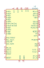
CS4245 | Description: 104 dB, 24-Bit, 192 kHz Stereo Audio CODEC, LQFP-48
Keys: audio codec 2ch 24bit 192kHz
Datasheet: https://d3uzseaevmutz1.cloudfront.net/pubs/proDatasheet/CS4245_F3.pdf |
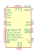
CS4270 | Description: 24-Bit, 192-kHz Stereo Audio CODEC, TSSOP-24
Keys: Audio Codec
Datasheet: https://statics.cirrus.com/pubs/proDatasheet/CS4270_F1.pdf |
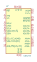
CS4272 | Description: 24-Bit, 192 kHz Stereo Audio CODEC, TSSOP-28
Keys: stereo 2ch audio codec i2s 24bit 192kHz
Datasheet: https://statics.cirrus.com/pubs/proDatasheet/CS4272_F1.pdf |
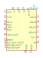
CS43L21 | Description: Low-Power, Stereo Digital-to-Analog Converter, QFN-32
Keys: audio dac 2ch 24bit 96kHz
Datasheet: https://d3uzseaevmutz1.cloudfront.net/pubs/proDatasheet/CS43L21_F1.pdf |
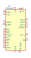
CS5361 | Description: 114 dB, 192 kHz, Multi-Bit Audio A/D Converter, SOIC-24/TSSOP-24
Keys: audio adc 2ch 24bit 192kHz
Datasheet: https://d3uzseaevmutz1.cloudfront.net/pubs/proDatasheet/CS5361_F2.pdf |
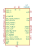
CS8406 | Description: 192 kHz Digital Audio Interface Transmitter, SOIC-28/TSSOP-28
Keys: audio digital interface transmitter 192kHz
Datasheet: https://d3uzseaevmutz1.cloudfront.net/pubs/proDatasheet/CS8406_F6.pdf |
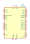
CS8414 | Description: 96 kHz Digital Audio Receiver, SOIC-28
Keys: audio digital interface receiver
Datasheet: http://lampizator.eu/LAMPIZATOR/TRANSPORT/CS8414_receiver.pdf |
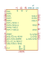
CS8416-xNZ | Description: 192 kHz Digital Audio Interface Receiver, QFN-28
Keys: audio digital interface receiver
Datasheet: https://d3uzseaevmutz1.cloudfront.net/pubs/proDatasheet/CS8416_F3.pdf |
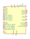
CS8416-xSZ | Description: 192 kHz Digital Audio Interface Receiver, SOIC-28
Keys: audio digital interface receiver
Datasheet: https://d3uzseaevmutz1.cloudfront.net/pubs/proDatasheet/CS8416_F3.pdf |
CS8416-xZZ | Description: 192 kHz Digital Audio Interface Receiver, TSSOP-28
Keys: audio digital interface receiver
Datasheet: https://d3uzseaevmutz1.cloudfront.net/pubs/proDatasheet/CS8416_F3.pdf |
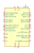
CS8420 | Description: Digital Audio Sample Rate Converter, SOIC-28
Keys: audio sample rate converter
Datasheet: https://d3uzseaevmutz1.cloudfront.net/pubs/proDatasheet/CS8420_F4.pdf |
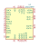
DSD1794A | Description: 24-Bit, 192-kHz Sampling, Advanced Segment, Audio Stereo Digital-to-Analog Converter, SW Control, SSOP-28
Keys: audio dac 2ch 24bit 192kHz
Datasheet: http://www.ti.com/lit/ds/symlink/dsd1794a.pdf |
ISD25120P | Description: Single-Chip Voice Record/Playback Device 120-Second Duration, DIP-28
Keys: isd25120
Datasheet: https://datasheetspdf.com/pdf-file/700027/Winbond/ISD2560/1 |
ISD25120S | Description: Single-Chip Voice Record/Playback Device 120-Second Duration, SOIC-28
Keys: isd25120
Datasheet: https://datasheetspdf.com/pdf-file/700027/Winbond/ISD2560/1 |
ISD2560E | Description: Single-Chip Voice Record/Playback Device 60-Second Duration, TSOP-I-28
Keys: isd2560
Datasheet: https://datasheetspdf.com/pdf-file/700027/Winbond/ISD2560/1 |
ISD2560P | Description: Single-Chip Voice Record/Playback Device 60-Second Duration, DIP-28
Keys: isd2560
Datasheet: https://datasheetspdf.com/pdf-file/700027/Winbond/ISD2560/1 |
ISD2560S | Description: Single-Chip Voice Record/Playback Device 60-Second Duration, SOIC-28
Keys: isd2560
Datasheet: https://datasheetspdf.com/pdf-file/700027/Winbond/ISD2560/1 |
ISD2575E | Description: Single-Chip Voice Record/Playback Device 75-Second Duration, TSOP-I-28
Keys: isd2575
Datasheet: https://datasheetspdf.com/pdf-file/700027/Winbond/ISD2560/1 |
ISD2575P | Description: Single-Chip Voice Record/Playback Device 75-Second Duration, DIP-28
Keys: isd2575
Datasheet: https://datasheetspdf.com/pdf-file/700027/Winbond/ISD2560/1 |
ISD2575S | Description: Single-Chip Voice Record/Playback Device 75-Second Duration, SOIC-28
Keys: isd2575
Datasheet: https://datasheetspdf.com/pdf-file/700027/Winbond/ISD2560/1 |
ISD2590E | Description: Single-Chip Voice Record/Playback Device 90-Second Duration, TSOP-I-28
Keys: isd2590
Datasheet: https://datasheetspdf.com/pdf-file/700027/Winbond/ISD2560/1 |
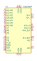
ISD2590P | Description: Single-Chip Voice Record/Playback Device 90-Second Duration, DIP-28
Keys: isd2590
Datasheet: https://datasheetspdf.com/pdf-file/700027/Winbond/ISD2560/1 |
ISD2590S | Description: Single-Chip Voice Record/Playback Device 90-Second Duration, SOIC-28
Keys: isd2590
Datasheet: https://datasheetspdf.com/pdf-file/700027/Winbond/ISD2560/1 |
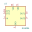
MN3005 | Description: 4096-STAGE LONG DELAY BBD (bucket brigade device), delay time 20.48ms to 204.8ms, S/N 75dB, clock frequency range 10KHz to 100KHz
Keys: Matsushita Panasonic BBD
Datasheet: http://www.experimentalistsanonymous.com/diy/Datasheets/MN3005.pdf |
MN3007 | Description: 1024-STAGE LOW NOISE BBD (bucket brigade device), delay time 5.12ms to 51.2ms, S/N 80dB, clock frequency range 10KHz to 100KHz
Keys: Matsushita Panasonic BBD
Datasheet: http://www.experimentalistsanonymous.com/diy/Datasheets/MN3007.pdf |
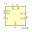
MN3207 | Description: 1024-STAGE LOW VOLTAGE OPERATION LOW NOISE BBD (bucket brigade device), delay time 2.56ms to 51.2ms, S/N 73dB, clock frequency range 10KHz to 200KHz
Keys: Matsushita Panasonic BBD
Datasheet: http://www.experimentalistsanonymous.com/diy/Datasheets/MN3207.pdf |
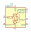
MSGEQ7 | Description: Seven Band Graphic Equalizer, DIP-8/SOIC-8
Keys: equalizer filter
Datasheet: http://mix-sig.com/images/datasheets/MSGEQ7.pdf |
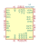
PCM1792A | Description: 24-Bit, 192-kHz Sampling, Advanced Segment, Audio Stereo Digital-to-Analog Converter, SW Control, SSOP-28
Keys: audio dac 2ch 24bit 192kHz
Datasheet: http://www.ti.com/lit/ds/symlink/pcm1792a.pdf |
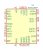
PCM1794A | Description: 24-Bit, 192-kHz Sampling, Advanced Segment, Audio Stereo Digital-to-Analog Converter, HW Control, SSOP-28
Keys: audio dac 2ch 24bit 192kHz
Datasheet: http://www.ti.com/lit/ds/symlink/pcm1794a.pdf |
PCM2902 | Description: Stereo Audio Codec with USB interface, Analog Iput/Output, and S/PDIF, SSOP-28
Keys: pcm2902 usb audio
Datasheet: http://www.ti.com/lit/ds/symlink/pcm2902c.pdf |
PCM5100 | Description: 2VRMS DirectPath, 100dB Audio Stereo DAC with 32-bit, 384kHz PCM Interface, TSSOP-20
Keys: audio dac 2ch 32bit 384kHz
Datasheet: http://www.ti.com/lit/ds/symlink/pcm5100.pdf |
PCM5101 | Description: 2VRMS DirectPath, 106dB Audio Stereo DAC with 32-bit, 384kHz PCM Interface, TSSOP-20
Keys: audio dac 2ch 32bit 384kHz
Datasheet: http://www.ti.com/lit/ds/symlink/pcm5101.pdf |
PCM5102 | Description: 2VRMS DirectPath, 112dB Audio Stereo DAC with 32-bit, 384kHz PCM Interface, TSSOP-20
Keys: audio dac 2ch 32bit 384kHz
Datasheet: http://www.ti.com/lit/ds/symlink/pcm5102.pdf |
PCM5121PW | Description: 2VRMS DirectPath, 106dB Audio Stereo DAC with 32-bit, 384kHz PCM Interface, TSSOP-28
Keys: audio dac 2ch 32bit 384kHz
Datasheet: http://www.ti.com/lit/ds/symlink/pcm5121.pdf |
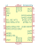
PCM5122PW | Description: 2VRMS DirectPath, 112dB Audio Stereo DAC with 32-bit, 384kHz PCM Interface, TSSOP-28
Keys: audio dac 2ch 32bit 384kHz
Datasheet: http://www.ti.com/lit/ds/symlink/pcm5122.pdf |
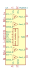
PGA4311 | Description: 4-Channel Audio Volume Control, SPI Interface, +31.5dB to -95.5dB, SOIC-28W
Keys: audio volume control 4ch spi
Datasheet: http://www.ti.com/lit/ds/symlink/pga4311.pdf |
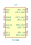
PT2399 | Description: Echo Processor IC
Keys: CMOS ADC DAC 44K Digital processing VCO
Datasheet: http://sound.westhost.com/pt2399.pdf |
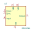
RD5106A | Description: Analog Delay Line 256 sample bucket brigade device, 512usec to more than 1second, input signal frequency range 0 to 170KHz, clock frequency range 500Hz to 1MHz
Keys: EG&G RETICON BBD N-channel silicon-gate
Datasheet: http://pdf.datasheetarchive.com/indexerfiles/Scans-091/DSAHI00048836.pdf |
RD5107A | Description: Analog Delay Line 512 sample bucket brigade device, 1msec to more than 2seconds, input signal frequency range 0 to 170KHz, clock frequency range 500Hz to 1MHz
Keys: EG&G RETICON BBD N-channel silicon-gate
Datasheet: http://pdf.datasheetarchive.com/indexerfiles/Scans-091/DSAHI00048836.pdf |
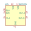
SAD1024 | Description: SAD-1024 DUAL ANALOG DELAY LINE, bucket brigade device, 2 independent 512 stages, signal frequency range 0 to 200KHz, clock frequency range 1.5KHz to 1.5MHz
Keys: EG&G RETICON BBD N-channel silicon-gate
Datasheet: http://thmq.mysteria.cz/em1022/SAD1024.pdf |
SAD512 | Description: SAD-512 ANALOG DELAY LINE, bucket brigade device, 512 stages, signal frequency range 0 to 200KHz, clock frequency range 1.5KHz to 1.5MHz
Keys: EG&G RETICON BBD N-channel silicon-gate
Datasheet: http://thmq.mysteria.cz/em1022/SAD1024.pdf |
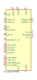
SGTL5000XNAA3 | Description: Low Power Stereo Codec with Headphone Amp, QFN-32
Keys: Codec
Datasheet: https://www.nxp.com/docs/en/data-sheet/SGTL5000.pdf |
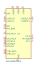
SGTL5000XNLA3 | Description: Low Power Stereo Codec with Headphone Amp, QFN-20
Keys: Codec
Datasheet: https://www.nxp.com/docs/en/data-sheet/SGTL5000.pdf |
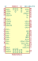
SRC4392xPFB | Description: Two-Channel, Asynchronous Sample Rate Converter with Integrated Digital Audio Interface Receiver and Transmitter, TQFP-48
Keys: audio sample rate converter
Datasheet: http://www.ti.com/lit/ds/symlink/src4392.pdf |
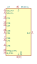
SSI2144 | Description: Four-pole VCF, SSOP-16
Keys: Sound Semiconductor VCF SSM2044
Datasheet: http://www.soundsemiconductor.com/downloads/ssi2144datasheet.pdf |
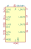
SSI2164 | Description: Quad VCA, SOIC-16
Keys: Sound Semiconductor VCA SSM2164
Datasheet: http://www.soundsemiconductor.com/downloads/ssi2164datasheet.pdf |
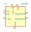
TDA1022 | Description: BUCKET BRIGADE DELAY LINE FOR ANALOGUE SIGNALS, 512 stages, delay time 0.512ms to 51.2ms, signal frequency range 0 to 45KHz, clock frequency range 5KHz to 500KHz, DIP-16
Keys: PHILIPS BBD MOS monolithic delay analogue
Datasheet: http://thmq.mysteria.cz/em1022/TDA1022.pdf |
THAT1580 | Description: Low-Noise, Differential Audio Preamplifier IC, 0.005% THD+N, -134.8dBu EIN, QFN-16
Keys: diff amp mic preamp
Datasheet: http://www.thatcorp.com/datashts/THAT_1580_Datasheet.pdf |
THAT1583 | Description: Low-Noise, Differential Audio Preamplifier IC, 0.006% THD+N, -128.9dBu EIN, QFN-16
Keys: diff amp mic preamp
Datasheet: http://www.thatcorp.com/datashts/THAT_1583_Datasheet.pdf |
THAT5171 | Description: High-Performance Digital Preamplifier Controller IC, QFN-32
Keys: mic preamp gain controller
Datasheet: http://www.thatcorp.com/datashts/THAT_5171_Datasheet.pdf |
THAT5173 | Description: Audio Preamplifier Digital Controller IC, QFN-24
Keys: mic preamp gain controller
Datasheet: http://www.thatcorp.com/datashts/THAT_5173_Datasheet.pdf |
THAT5263 | Description: 2-Channel Digital Preamplifier Controller IC, QFN-24
Keys: dual mic preamp gain controller
Datasheet: http://www.thatcorp.com/datashts/THAT_5263_Datasheet.pdf |
THAT6261 | Description: 2-Channel Low-Noise Programmable-Gain Preamplifier - ADC Driver IC, 1dB Step, QFN-48
Keys: dual mic preamp
Datasheet: http://www.thatcorp.com/datashts/THAT_626x_Datasheet.pdf |
THAT6262 | Description: 2-Channel Low-Noise Programmable-Gain Preamplifier - ADC Driver IC, 2dB Step, QFN-48
Keys: dual mic preamp
Datasheet: http://www.thatcorp.com/datashts/THAT_626x_Datasheet.pdf |
THAT6263 | Description: 2-Channel Low-Noise Programmable-Gain Preamplifier - ADC Driver IC, 3dB Step, QFN-48
Keys: dual mic preamp
Datasheet: http://www.thatcorp.com/datashts/THAT_626x_Datasheet.pdf |
TLV320AIC23BPW | Description: Stero Audio CODEC, 8- to 96-kHz, With Integrated Headphone Amplifier, TSSOP-28
Keys: audio codec 2ch 96kHz headphone amplifier
Datasheet: http://www.ti.com/lit/ds/symlink/tlv320aic23b.pdf |
TLV320AIC23BRHD | Description: Stero Audio CODEC, 8- to 96-kHz, With Integrated Headphone Amplifier, QFN-28
Keys: audio codec 2ch 96kHz headphone amplifier
Datasheet: http://www.ti.com/lit/ds/symlink/tlv320aic23b.pdf |
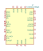
TLV320AIC23BxQE | Description: Stero Audio CODEC, 8- to 96-kHz, With Integrated Headphone Amplifier, BGA-32
Keys: audio codec 2ch 96kHz headphone amplifier
Datasheet: http://www.ti.com/lit/ds/symlink/tlv320aic23b.pdf |
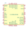
TLV320AIC3100 | Description: Low Power Audio Codec with Audio Processing and Mono ClassD Amplifier, VQFN-32
Keys: audio codec 2ch 192kHz class-d amplifier
Datasheet: http://www.ti.com/lit/ds/symlink/tlv320aic3100.pdf |
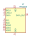
TPA5050 | Description: Stereo Digital Audio Lip-Sync Delay Processor With I2C Control, QFN-16
Keys: audio delay
Datasheet: http://www.ti.com/lit/ds/symlink/tpa5050.pdf |
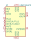
UDA1334ATS | Description: Low Power Audio DAC with PLL, SSOP-16
Keys: audio dac 2ch 24bit 96kHz
Datasheet: http://www.nxp.com/docs/en/data-sheet/UDA1334ATS.pdf |
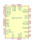
WM8731CLSEFL | Description: Portable Internet Audio CODEC with Headphone Driver and Programmable Sample Rates, QFN-28
Keys: wolfson stereo audio codec adc dac headphone
Datasheet: https://statics.cirrus.com/pubs/proDatasheet/WM8731_v4.9.pdf |
WM8731CSEFL | Description: Portable Internet Audio CODEC with Headphone Driver and Programmable Sample Rates, QFN-28
Keys: wolfson stereo audio codec adc dac headphone
Datasheet: https://statics.cirrus.com/pubs/proDatasheet/WM8731_v4.9.pdf |
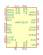
WM8731SEDS | Description: Portable Internet Audio CODEC with Headphone Driver and Programmable Sample Rates, SSOP-28
Keys: wolfson stereo audio codec adc dac headphone
Datasheet: https://statics.cirrus.com/pubs/proDatasheet/WM8731_v4.9.pdf |
YM2149 | Description: Software-Controlled Sound Generator, DIP-40
Keys: audio ssg 3ch
Datasheet: http://www.ym2149.com/ym2149.pdf |